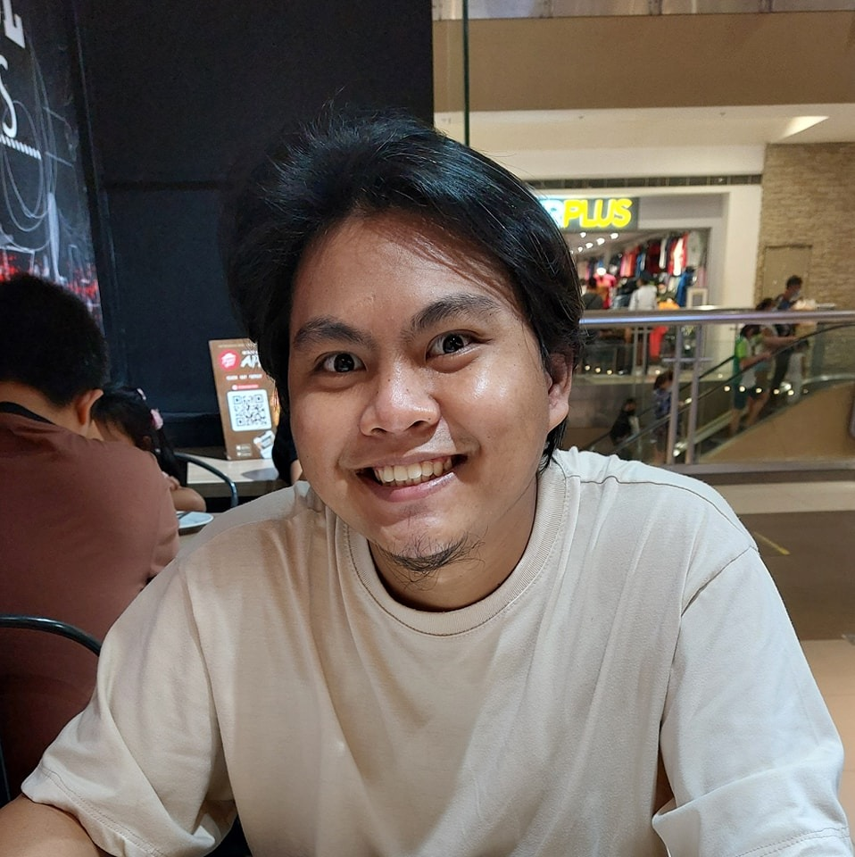

Cen Katfil A. Dayondon

Objective:
Eager to contribute my programming knowledge and problem-solving abilities to a dynamic team in forward-thinking organization and further enhance my skills in software development and data analysis.
Education:
- July 2015 - October 2020
University of Cebu Main Campus
Bacheclor of Science in Computer Engineering
Sanciangko St., Cebu City 6000
- 2011 - 2015
Abellana National School
Osmena Blvd. Cebu City 6000
Work Experience:
- July 2023 - Present
Survey Programmer II
Dynata Philippines Inc.
- June 2021 - June 2023
Survey Programmer
Dynata Philippines Inc.
- April 2019 - May 2019
IT Support Technician – OJT
Primary Structures Corporation
Skills:
- Programming
- HTML: 🌟🌟🌟🌟🌟
- CSS: 🌟🌟🌟🌟
- Languages:
- C: 🌟🌟🌟
- Python: 🌟🌟🌟
- Javascript: 🌟🌟🌟
- Microsoft Office Suite: 🌟🌟🌟
- Photoshop: 🌟🌟🌟
Trainings and Seminars:
- 2015 - 2020
NC 2 – Electrical Installation and Maintenance
- 2019
CCNA – Scaling Networks
- 2019
Institute of Computer Engineers of the Philippines – Seminar
- 2015
Technological Update Seminar
- 2015
Accelerating work achievement and readiness for
Employment